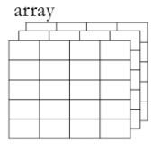

VaR y CVaR por el método de simulación Monte Carlo¶
Importar datos.¶
datos = read.csv("Tres acciones.csv", sep = ";")
Matriz de precios.¶
precios = datos[,-1]
Matriz de rendimientos.¶
rendimientos = matrix(, nrow(precios)-1, ncol(precios))
for(i in 1:ncol(precios)){
rendimientos[,i] = diff(log(precios[,i]))
}
Número de acciones del portafolio de inversión.¶
numero_acciones = c(180000,5000,12000)
numero_acciones
- 180000
- 5000
- 12000
Valor de mercado de cada acción.¶
valor_mercado_acciones = numero_acciones*s
valor_mercado_acciones
- 536400000
- 206500000
- 227520000
Valor de mercado del portafolio de inversión.¶
valor_portafolio = sum(valor_mercado_acciones)
valor_portafolio
Proporciones de inversión¶
proporciones = valor_mercado_acciones/valor_portafolio
proporciones
- 0.552750355516168
- 0.212794460130665
- 0.234455184353167
\(\mu:\) Rendimiento esperado de cada acción¶
mu = apply(rendimientos, 2, mean)
mu
- 0.000142550355302127
- 0.000319532367160843
- 0.000353968507201265
\(\sigma:\)Volatilidad de cada acción¶
volatilidades = apply(rendimientos, 2, sd)
volatilidades
- 0.0186287123700029
- 0.0158377375241563
- 0.0155685912187815
Matriz de coeficientes de correlación¶
correlacion = cor(rendimientos)
correlacion
| 1.0000000 | 0.3602051 | 0.3218894 |
| 0.3602051 | 1.0000000 | 0.3299546 |
| 0.3218894 | 0.3299546 | 1.0000000 |
Descomposición de Cholesky¶
cholesky = chol(correlacion)
cholesky
| 1 | 0.3602051 | 0.3218894 |
| 0 | 0.9328731 | 0.2294079 |
| 0 | 0.0000000 | 0.9185637 |
VaR y CVaR mensual con un nivel de confianza del 99%¶
Para calcular el VaR por el método de Simulación Monte Carlo se realiza el siguiente procedimiento: * Generar los precio simulados correlacionados con el Movimiento Browniano Geométrico (MBG) hasta el período de análisis. * Calcular los rendimientos simulados a partir de los precios simulados. * Calcular el VaR y CVaR como en el método de Simulación Histórica.
La frecuencia de los datos cargados es diaria y se necesita llegar al
día 20 (1 mes) esto con saltos diarios, entonces, dt=1 y n=20
(20 saltos en el tiempo de un día cada uno).
n = 20
dt = 1
NC = 0.99
Precios simulados correlacionados¶
Para simular los precios con el MBG se utilizará un array. Un
arrayes un objeto que tendrá varias matrices.
Este es un ejemplo de array:

1¶
Los precios simulados de la primera acción estarán en la primera matriz, la segunda acción estárá en la segunda matriz, etc.
Las ubicaciones están representadas de la siguiente manera:
[Filas,Columnas,Matriz].
iteraciones = 50000
st=array(dim = c(iteraciones, n+1, ncol(rendimientos)))
for(i in 1:ncol(rendimientos)){
st[,1,i] = s[i] # Con este for se está almacenando el precio actual de cada acción en la columna 1 de las matrices del array.
}
aleatorio_corr = vector()
for(k in 1:ncol(precios)){
for(i in 1:iteraciones){
for(j in 2:(n+1)){
aleatorio = rnorm(ncol(precios))
aleatorio_corr = colSums(aleatorio*cholesky)
st[i,j,k] = st[i,j-1,k]*exp((mu[k]-volatilidades[k]^2/2)*dt+volatilidades[k]*sqrt(dt)*aleatorio_corr[k])
}
}
}
Rendimientos mensuales simulados de cada acción¶
El rendimiento relativo se calcula de la siguiente manera:
Con los precios simulados se calcularán los rendimientos simulados con
respecto al precio inicial s con la siguiente fórmula:
Como se realizó una simulación con saltos diarios hasta el día 20 que representa el mes, entonces los valores que se necesitan para el VaR mensual son los últimos precios simulados que se ubican en la columna ``n+1`` del array ``st``.
Estos rendimientos simulados se llamarán rend. El número de columnas
de este objeto será igual a la cantidad de acciones
ncol(rendimientos) y las filas igual a las iteraciones.
rend = matrix(, iteraciones, ncol(rendimientos))
for(i in 1:ncol(rendimientos)){
rend[,i] = st[,n+1,i]/s[i]-1 #Rendimientos simulados de cada acción para el día 20.
}
Rendimientos mensuales simulados del portafolio de inversión¶
Después de tener hallados los rendimientos simulados de cada acción, se
procede a hallar los rendimientos simulados del portafolio de inversión,
esto se hace con rend_port[i]=sum(rend[i,]*proporciones).
rend_port = vector()
for(i in 1:nrow(rendimientos)){
rend_port[i] = sum(rend[i,]*proporciones)
}
VaR mensual individuales¶
VaR_individuales_SM_percentil = vector()
for(i in 1:ncol(rendimientos)){
VaR_individuales_SM_percentil[i] = abs(quantile(rend[,i], 1-NC)*valor_mercado_acciones[i])
}
VaR_individuales_SM_percentil
- 94222055.8999856
- 30324933.4626248
- 33222220.6058242
VaR mensual portafolio de inversión¶
VaR_portafolio_SM_percentil = abs(quantile(rend_port, 1-NC)*valor_portafolio)
VaR_portafolio_SM_percentil
CVaR mensual individuales¶
CVaR = vector()
for(i in 1:ncol(rendimientos)){
CVaR[i] = abs(mean(tail(sort(rend[,i], decreasing = T), floor(nrow(rend)*(1-NC))))*valor_mercado_acciones[i])
}
CVaR
- 106910291.861578
- 34387998.1240636
- 37716797.8030966
CVaR mensual portafolio de inversión¶
CVaR_portafolio = abs(mean(tail(sort(rend_port, decreasing = T), floor(nrow(rend)*(1-NC))))*valor_portafolio)
CVaR_portafolio
VaR diario con un nivel de confianza del 99%¶
Como anteriormente se hallaron los precios simulados para 20 días (un mes), no es necesario volverlos a calcularlos porque solo se necesitan los precios simulados del día uno para obtener los rendimientos simulados diarios. Estos valores están en la columna 2 del array ``st``.
NC = 0.99
Rendimientos diarios simulados de cada acción¶
st[,2,i]son los precios simulados de cada acción para el día uno.
rend = matrix(, iteraciones, ncol(rendimientos))
for(i in 1:ncol(rendimientos)){
rend[,i] = st[,2,i]/s[i]-1 #Rendimientos simulados de cada acción para el día 1.
}
Rendimientos diarios simulados del portafolio de inversión¶
rend_port = vector()
for(i in 1:nrow(rendimientos)){
rend_port[i] = sum(rend[i,]*proporciones)
}
VaR diario individuales¶
VaR_individuales_SM_percentil = vector()
for(i in 1:ncol(rendimientos)){
VaR_individuales_SM_percentil[i] = abs(quantile(rend[,i], 1-NC)*valor_mercado_acciones[i])
}
VaR_individuales_SM_percentil
- 22560307.8766136
- 7365128.50942637
- 8090723.16189517
VaR diario portafolio de inversión¶
VaR_portafolio_SM_percentil = abs(quantile(rend_port, 1-NC)*valor_portafolio)
VaR_portafolio_SM_percentil
CVaR diario individuales¶
CVaR = vector()
for(i in 1:ncol(rendimientos)){
CVaR[i] = abs(mean(tail(sort(rend[,i], decreasing = T), floor(nrow(rend)*(1-NC))))*valor_mercado_acciones[i])
}
CVaR
- 25945051.1791835
- 8432138.81193205
- 9238716.17716916
CVaR diario portafolio de inversión¶
CVaR_portafolio = abs(mean(tail(sort(rend_port, decreasing = T), floor(nrow(rend)*(1-NC))))*valor_portafolio)
CVaR_portafolio
VaR semanal con un nivel de confianza del 95%¶
Como anteriormente se hallaron los precios simulados para 20 días (un mes), no es necesario volverlos a calcularlos porque solo se necesitan los precios simulados del cinco uno para obtener los rendimientos simulados semanales. Estos valores están en la columna 6 del array ``st``.
NC = 0.95
Rendimientos semanales simulados de cada acción¶
st[,6,i]son los precios simulados de cada acción para una semana.
rend = matrix(, iteraciones, ncol(rendimientos))
for(i in 1:ncol(rendimientos)){
rend[,i] = st[,6,i]/s[i]-1 #Rendimientos semanales simulados de cada acción.
}
Rendimientos semanales simulados del portafolio de inversión¶
rend_port = vector()
for(i in 1:nrow(rendimientos)){
rend_port[i] = sum(rend[i,]*proporciones)
}
VaR semanal individuales¶
VaR_individuales_SM_percentil = vector()
for(i in 1:ncol(rendimientos)){
VaR_individuales_SM_percentil[i] = abs(quantile(rend[,i], 1-NC)*valor_mercado_acciones[i])
}
VaR_individuales_SM_percentil
- 35557722.6874532
- 11346066.8430539
- 12413474.1995438
VaR semanal portafolio de inversión¶
VaR_portafolio_SM_percentil = abs(quantile(rend_port, 1-NC)*valor_portafolio)
VaR_portafolio_SM_percentil
CVaR semanal individuales¶
CVaR = vector()
for(i in 1:ncol(rendimientos)){
CVaR[i] = abs(mean(tail(sort(rend[,i], decreasing = T), floor(nrow(rend)*(1-NC))))*valor_mercado_acciones[i])
}
CVaR
- 44206313.8692839
- 14176644.0029557
- 15566791.8582029
CVaR semanal portafolio de inversión¶
CVaR_portafolio = abs(mean(tail(sort(rend_port, decreasing = T), floor(nrow(rend)*(1-NC))))*valor_portafolio)
CVaR_portafolio